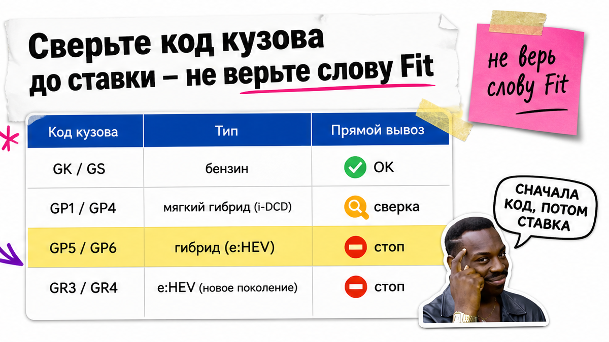
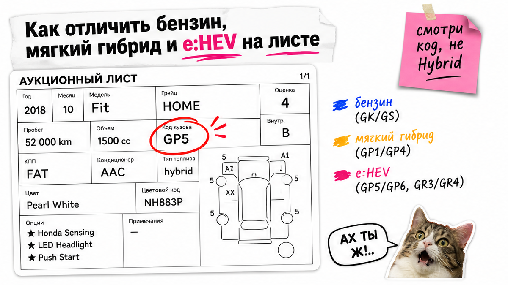
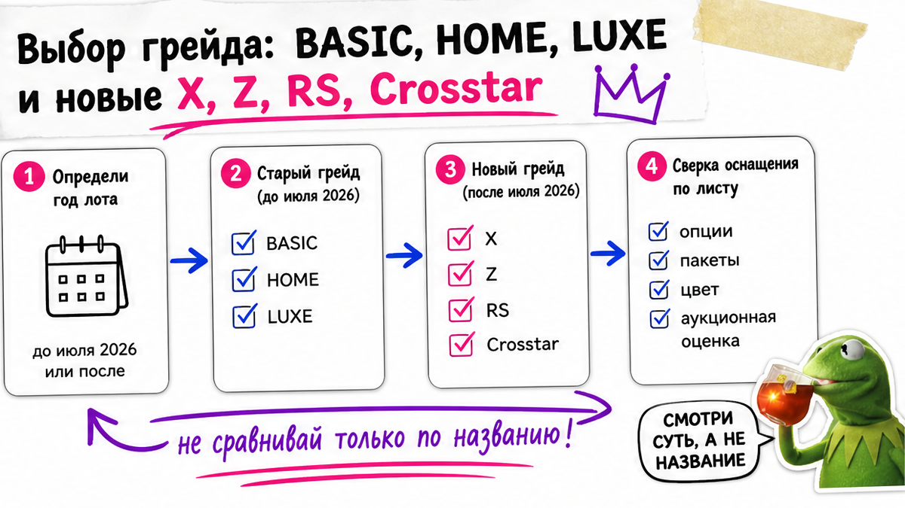

На аукционе лот подписан просто "Fit" или "HYBRID", оценка 4.5, фото как новые – рука уже тянется к ставке. Типичная ошибка: смотреть на красоту и слово Hybrid, а не на код кузова. Ниже – спокойный разбор до депозита: что проходное для прямого вывоза в РФ в 2026, чем GP1/GP4 отличаются от GP5/GP6 и e:HEV, как читать грейды после ренейминга июля 2026 и чеклист из 10 пунктов. После него вы сможете отсечь непроходной лот сами и получите понятный результат до депозита, без "ставки вслепую".
Сначала код кузова, потом фото. Бензин GK*/GS* и ранние GR1/GR2 – рабочий путь; GP5/GP6 и e:HEV (GR3/GR4 и соседние) для прямого вывоза в РФ – стоп. Слово Hybrid на листе ничего не решает. Грейды BASIC/HOME рядом с новыми X/Z сравнивать только вместе с кодом и силовой. До депозита пройдите 10 пунктов листа.
Honda Fit стабильно в топе японского б/у ввоза: по открытым сводкам Autostat за январь–август 2026 модель около 9 973 штук и третье место после Freed и Stepwgn. Конкуренция на торгах высокая, а ловушка одна и та же – красивый шильдик при непроходной силовой.
Представьте сцену: Fit 2022 "HYBRID", пробег "как новый", бюджет уже прикинут "под ключ". На практике в листе оказывается код GP5 – полный гибрид, прямой вывоз закрыт. После этой статьи сначала ищете код, потом смотрите фото.

Боль новичка: на листе всё "Fit", а вывоз зависит не от имени модели. Сделайте так: откройте аукционный лист и выпишите код кузова одной строкой. Не делайте ставку, пока этой строки нет в блокноте.
Ориентир по кодам (сверка по открытым разборам поколений и практике импорта, не по красоте заголовка лота):
| Код / тип | Что это | Прямой вывоз в РФ |
|---|---|---|
| GK3/4, GK5/6 | 3-е поколение, бензин 1.3 / 1.5 | Рабочий путь при нормальном листе |
| GS4/GS6 (с окт. 2022), ранние GR1/GR2 | 4-е поколение, бензин 1.5 / 1.3 | Рабочий путь; сверяйте объём и год |
| GP1 / GP4 | Мягкий гибрид IMA (не ездит только на электро) | Не "на глаз": только после сверки "мягкий" + экспортёр |
| GP5 / GP6 | Полный гибрид i-DCD; на листе часто просто HYBRID | Стоп для прямого вывоза |
| GR3 / GR4 (Crosstar часто GR6/GR8) | e:HEV – полный гибрид | Стоп для прямого вывоза |
Вердикт: Если в заголовке Hybrid, а кода нет – лот ещё не проверен. Слово Fit само по себе разрешения на вывоз не даёт.

С августа 2023 Япония ограничила экспорт в РФ легковых авто с ДВС свыше 1900 см³, гибридов, PHEV и электромобилей. Для Fit объём двигателя обычно не главный стоп – стоп даёт именно полный гибрид.
На пальцах: мягкий гибрид (GP1/GP4) – помощник стартера/генератора, на одной электротяге машина не едет. Полный гибрид и e:HEV умеют ехать на электричестве и попадают под запрет прямого вывоза. Типичная ошибка – увидеть HYBRID и решить, что "это эко и можно".
Не делайте ставку на GP5 "потому что красивый RS". Избегайте обещаний "везём e:HEV прямым фрахтом" – для прямого канала это закрыто. GP1/GP4 не гарантируйте сами: используйте сверку с экспортёром до денег. Проверьте код ещё раз, если в заголовке Hybrid, а в строке шасси пусто.
Схема до ставки:
Лист → Код кузова → Матрица вывоза → КПП и объём → Вопросы экспортёру → Лимит ставки

Боль: "не знаю, какой грейд брать" и страх переплатить за шильдик. Для вывоза важнее силовая и код. Грейд – про оснащение и комфорт, не про разрешение таможни.
С 10 июля 2026 Honda в Японии запустила minor change: BASIC переименовали в X, HOME – в Z. RS и CROSSTAR в новой линейке сделали гибрид-focused; бензин остаётся у X/Z. На аукционах ещё долго висят старые BASIC/HOME/LUXE рядом с новыми X/Z – сравнивать только по названию грейда нельзя.
Например, лот 2022 HOME на бензине и свежий Z на бензине – разные эпохи оснащения, но оба могут быть проходными по силовой. А новый RS после июля 2026 часто завязан на гибрид: гоняться за шильдиком при коде e:HEV бессмысленно.
Сделайте shortlist так: сначала проходной бензин (или явно сверенный мягкий), потом нужный уровень опций. Не делайте вывод "LUXE лучше Home" без кода и пробега. Проверьте, что грейд на листе совпадает с годом выпуска – иначе сравниваете яблоки с апельсинами.
Боль: "боюсь не понять лист и пропустить аварию". Аукционная оценка (часто 4 / 4.5) – не приговор и не индульгенция. Смотрите схему кузова и буквенные флаги.
Проверьте glossary-коды КПП на листе (CVT/AT), не путайте их с оценкой кузова. Избегайте ставки, если схема кузова не читается на скрине – попросите нормальный лист до депозита.
Актуальные лоты и расчёт "под ключ" без чужих скринов цен – в каталоге Авто-Сейлс. Готовых сумм пошлин в статье нет: цифры по году и объёму считают в каталоге.
Кажется, что аукцион "только для перекупов". На практике новичок закрывает боль простым чеклистом – без команды разработчиков и без депозита "на веру".
Не делайте депозит между шагами 1 и 8. Используйте этот чеклист как фильтр: нет ответа по коду – нет ставки.
Успех здесь простой и проверяемый. Результат дня: короткий список "можно / нельзя" по кодам кузова, понятная разница грейдов до и после июля 2026 и заполненный чеклист до ставки. Непроходные HYBRID/e:HEV отсеяны до депозита. Красивое фото больше не главный аргумент – вы сможете объяснить себе и менеджеру, почему лот берёте или пропускаете.
Если лист спорный или код Hybrid неочевиден – напишите в Telegram avtosales125: пришлите код кузова и скрин листа, без оплаты "вслепую". Форм на странице нет.
Материал проверен: Редакция Авто-Сейлс – эксперты по авто под заказ из Японии, Кореи и Китая (Владивосток).
Достоверность: факты сверены с пресс-релизами Honda JP (minor change Fit от 09.07.2026, старт продаж 10.07.2026), материалами METI по ограничению экспорта с 09.08.2023, разборами кодов кузова (GTYRES / практика импорта) и сводками Autostat по ввозу б/у за янв–авг 2026; актуальные расчёты и подбор – в каталоге, без готовых сумм пошлин в тексте.
Сделайте сверку по коду: GP5/GP6 – полный гибрид i-DCD, для прямого вывоза в РФ это стоп. GP1/GP4 – мягкий гибрид IMA; по уточнениям практики 2024+ мягкие не в той же корзине, что полные, но не делайте ставку без подтверждения экспортёра по конкретному шасси.
Не делайте ставку на e:HEV (типично GR3/GR4, Crosstar часто GR6/GR8) в расчёте на прямой вывоз: канал закрыт ограничениями Японии. Ищите бензиновый код или явно сверенный мягкий вариант.
Проверьте код и объём на листе: у бензиновых Fit обычно 1.3 или 1.5 – это ниже порога "свыше 1900 см³". Главный стоп для модели – полный гибрид/e:HEV, а не "полтора литра". Итоговую пошлину считайте в каталоге, не по чужим скринам.
Сначала силовая и код вывоза, потом грейд. После 10.07.2026 BASIC→X и HOME→Z; на торгах старые и новые имена живут рядом. Не сравнивайте лоты только по названию грейда – сверяйте год, код и оснащение.
Избегайте автоматической ставки "оценка хорошая". Поставьте лот на паузу, разберите схему кузова и флаги R/RA/RB с тем, кто читает листы. Красивая оценка не отменяет ремонт.
Не делайте депозит до шагов с кодом кузова и ответом экспортёра по вывозу. Сначала чеклист, потом деньги. Подбор и расчёт – через каталог и Telegram Авто-Сейлс, без форм на этой странице.